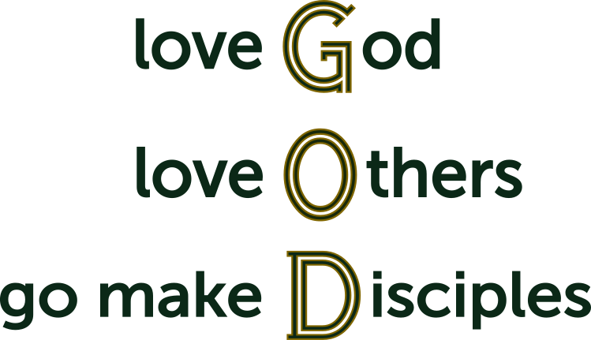
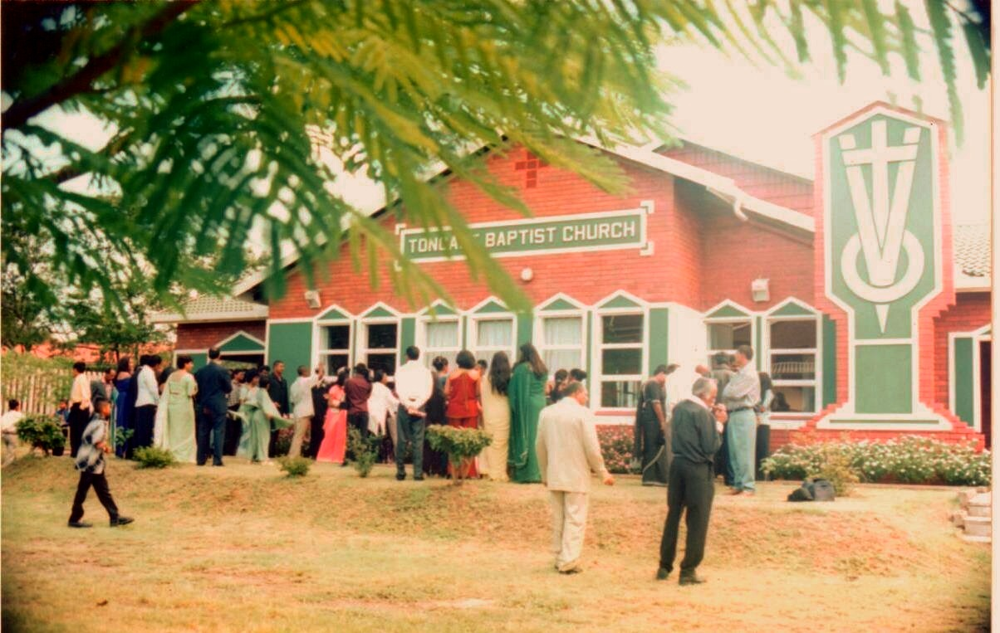
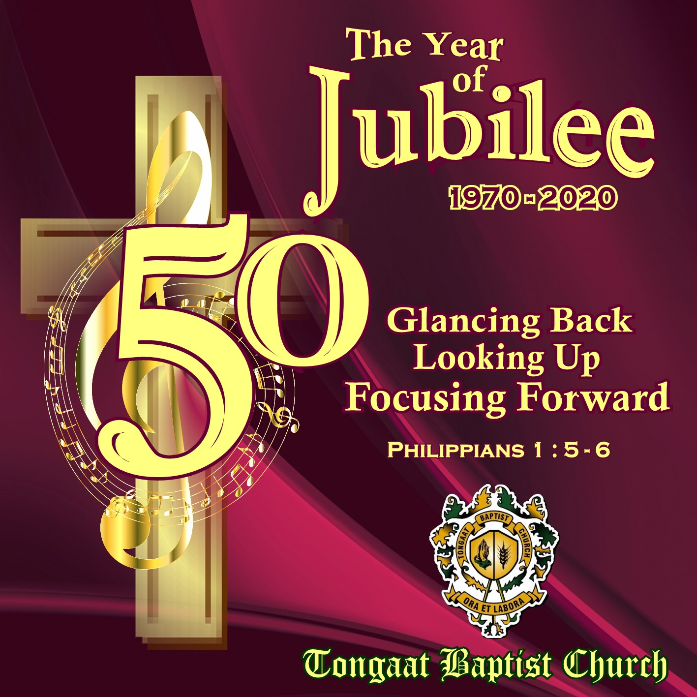

Our Worship Services
Sundays
09h30
43 Belvedere Drive
Tongaat
KwaZulu-Natal
South Africa
Contact Details
Pastor (Rev. T. Rhandaram)
0825383855
Secretary (Siva Ganesan)
0843455080
We are a Bible Believing Church of Jesus Christ.
Come, join us as we obey the call:
To Love God, To Love Others &
To Go, and Make Disciples

Jesus replied: “‘Love the Lord your God with all your heart and with all your soul and with all your mind.’ This is the first and greatest commandment. And the second is like it: ‘Love your neighbor as yourself.’
Therefore go and make disciples of all nations, baptizing them in the name of the Father and of the Son and of the Holy Spirit, and teaching them to obey everything I have commanded you. And surely I am with you always, to the very end of the age.”


Sundays
09h30
43 Belvedere Drive
Tongaat
KwaZulu-Natal
South Africa
Pastor (Rev. T. Rhandaram)
0825383855
Secretary (Siva Ganesan)
0843455080
1970 – 2020
Celebrating with Thanksgiving 50 Years of His Faithfulness!
To God be the Glory!
Read MoreIn recognition of its 50th Jubilee, the Tongaat Baptist Church has introduced “The Jubilee Scholarship” as a Living Legacy. This special ministry will serve as one of the ways of remembering and celebrating God’s goodness and grace towards the church, and also as a channel for growing and investing in God’s Kingdom for the years to come.
Official Launch – To Be Advised